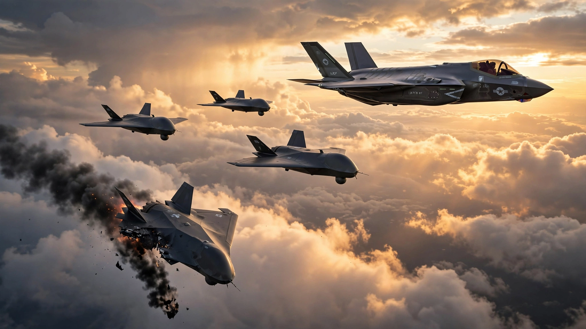

The Pentagon Is Building $25 Million Fighter Jets Designed to Die. The Math Says It Should Have Done It Sooner.
Applied to CSIS wargame attrition data from a Taiwan scenario, replacing 30% of combat sorties with autonomous Collaborative Combat Aircraft saves $9.3 billion in hardware and training costs and 135 irreplaceable fighter pilots. And the Air Force says it’s beating its cost targets.

One thousand, one hundred and forty-two. That number is how many fighter pilots the United States Air Force is short right now, according to an internal memo confirmed by the service last year. Fighter units are staffed at 82 percent. Retirements outpace recruitment. Training a single fighter pilot through operational readiness takes three to four years and costs roughly $11 million, and the pipeline cannot scale faster because there are not enough instructor pilots to run it, per Government Accountability Office estimates.
So the Air Force bought something else. On June 17, the service awarded production contracts to General Atomics and Anduril Industries for a combat aircraft that needs zero pilots, costs under $25 million per copy, and is explicitly designed to be lost in battle. Collaborative Combat Aircraft are autonomous drone wingmen built to fly alongside crewed F-35s and F-47s, carrying weapons into contested airspace so human pilots do not have to. Col. Timothy Helfrich, portfolio acquisition executive for fighters and advanced aircraft, told reporters the program is “doing much better” than the one-third-of-an-F-35 cost target set by former Air Force Secretary Frank Kendall.
Fiscal year 2027 requests $996.5 million for procurement and $1.431 billion for development, with more than 150 aircraft planned by decade's end and an eventual fleet target of 1,000.
Those are the headlines, but what sits underneath them is a cost calculation that reframes how America should think about losing aircraft in a war it actually expects to fight.
Attrition Has a Price Tag
In January 2023, CSIS ran 24 iterations of a wargame simulating a Chinese amphibious invasion of Taiwan. The results were consistent, and devastating: US, Taiwanese, and Japanese forces together lost more than 640 aircraft in the worst case. American losses alone ranged from 90 to 774 across iterations, with a base-case midpoint around 270 US aircraft destroyed according to Financial Times reporting on the classified scenarios. Ninety percent never got airborne because Chinese ballistic missiles hit them on the ground before engines could spool.
Now run 270 losses through today's cost structure. An F-35A from the latest production lot costs $82.5 million for the airframe; with the engine, closer to $101 million. Add the $11 million invested in training the pilot who sits in that cockpit through to operational readiness, the years of simulator time, the weapons school qualification, the institutional knowledge that cannot be downloaded from a server, and each loss represents $93.5 million in sunk cost plus a human being no budget line can ever replace.
A CCA costs under $25 million. No cockpit. No pilot. No funeral.
Pure hardware exchange ratio: 3.3-to-1. Lose three CCAs for the cost of one F-35. Factor in pilot training and it rises to 3.7-to-1. Factor in the pilot's life, and one side of that ledger becomes infinite.
$9.3 Billion Saved. 135 Lives Preserved.
Apply a conservative force-mix scenario to those CSIS numbers: thirty percent of combat sorties shift to CCAs, which absorb a disproportionate 50 percent of total aircraft losses despite flying fewer missions. Why? Because that is why they exist: autonomous wingmen sent into the densest air defense envelopes first, drawing fire, absorbing punishment, so the F-35 pilot flying two miles behind does not eat a SAM that was meant for a machine.
| Scenario | Manned Losses | CCA Losses | Hardware + Training Cost | Pilot Casualties |
|---|---|---|---|---|
| All-manned force | 270 | 0 | $25.3B | ~270 |
| 30% CCA mix | 135 | 135 | $16.0B | ~135 |
| Delta | −135 | +135 | −$9.3B | −135 |
Not a projection but subtraction: fewer F-35s destroyed at $93.5 million each saves $12.6 billion in hardware and training, offset by 135 CCAs destroyed at $25 million apiece for a bill of $3.4 billion and net savings of $9.3 billion. Enough to buy 372 replacement CCAs at current unit cost, replenishing the entire wartime loss two and a half times over with aircraft still sitting in the warehouse.
Pilots are the harder problem by orders of magnitude: replacing 135 combat-experienced fighter pilots at current training throughput takes a full decade, while replacing 135 CCAs takes nothing more than a production line and a fiscal quarter.
Putting a Price on Each Weapon in Contested Air
Force planners care about another number: cost per weapon station delivered into contested airspace. An F-35 in air-superiority configuration carries four internal weapons, typically two AIM-120 AMRAAMs and two AIM-9X Sidewinders, while Anduril has confirmed captive-carry tests of AIM-120 missiles on its CCA prototype, a platform expected to carry two.
| Platform | Unit Cost | Weapons Carried | Cost per Weapon Station |
|---|---|---|---|
| F-35A | $82.5M | 4 | $20.6M |
| CCA Increment 1 | ~$25M | 2 | $12.5M |
| CCA Increment 2 (est.) | ~$15M | 2 | $7.5M |
Increment 1 delivers a weapon into contested air for 39 percent less than an F-35. Increment 2, which Air Force Secretary Troy Meink has said should cost “substantially less, like maybe half” of Increment 1, drops that figure to $7.5 million. Sixty-four percent cheaper, no pilot required. And here is a detail that rarely makes the headlines: a CCA's 700 nautical mile combat radius exceeds the F-35A's roughly 590, pushing weapons further forward into contested territory without tanker support.
Affordable Attrition Is a Spectrum Now
CCAs sit on a price curve that did not exist five years ago, a continuum of platforms explicitly built to be lost, each matched to targets of corresponding value.
| Platform | Unit Cost | Payload | Designed To Kill |
|---|---|---|---|
| Ukraine FPV drone | $500–$2,000 | Shaped charge | Infantry, light vehicles |
| SpektreWorks LUCAS | $35,000 | Warhead | Vehicles, positions |
| CCA Increment 2 (est.) | ~$15M | 2 guided missiles | Air defenses, aircraft |
| CCA Increment 1 | ~$25M | 2 guided missiles | Air defenses, aircraft |
| F-35A | $82.5M+ | 4 guided missiles | Strategic targets |
Ukraine proved a $500 drone can kill a $3 million armored vehicle. Iran proved a $35,000 LUCAS can strike hardened positions. CCAs extend this logic upward into peer-adversary air combat, where targets are $100 million fighters, $500 million SAM batteries, and billion-dollar command nodes that no one would risk a pilot to hit. NATO committed $40 billion to counter-drone systems over five years at the Ankara summit last week. Pentagon spending tells an even louder story: $54 billion for the newly formed Defense Autonomous Warfare Group, a hundredfold increase over prior allocations for autonomous combat systems.
What This Analysis Does Not Prove
Assumptions matter. Nobody knows if 30 percent is the right sortie mix; the Air Force has not publicly stated what fraction of combat missions CCAs will fly. Nobody knows if CCAs will absorb 50 percent of attrition as intended, because the doctrinal concept of autonomous missile sponge has never been validated in peer combat. And the CSIS wargame modeled a specific scenario with specific force postures; a Middle East contingency or European theater produces different numbers, different geometry, different kill chains.
More fundamentally, the CCA itself remains unproven in any operational sense: General Atomics' YFQ-42A Dark Merlin prototype crashed on April 6, a total loss from an autopilot miscalculation of weight and center of gravity. Autonomy software is still under competitive development between Anduril, Shield AI, and Collins Aerospace. Nobody has demonstrated how AI-flown fighters perform when jammed, spoofed, or facing adversary autonomous systems in contested electromagnetic environments where GPS is denied, comms are degraded, and the onboard processor has to make life-or-death targeting decisions with no human in the loop. That is the hardest engineering problem in defense today. A $25 million drone that cannot find its target is not cheap; it is wreckage with a receipt.
But even skeptics' math works in the CCA's favor. Assume half of deployed CCAs fail their missions due to autonomy limitations, a full 50 percent failure rate, and attrition savings still exceed $4 billion in the CSIS base case while roughly 70 pilots still come home who otherwise would not have. Break-even sits at approximately 27 percent mission success, the rate below which CCAs stop saving money compared to an all-manned force. Above that threshold, every additional sortie adds value to the force. First-generation Predator drones, far less sophisticated than what General Atomics and Anduril are building now, achieved completion rates above 80 percent in permissive airspace two decades ago.
What This Means for You
America's Air Force is short 1,142 fighter pilots it cannot train fast enough, and it faces a peer adversary armed with the world's densest layered air defense network and enough ballistic missiles to crater every US air base within a thousand miles of Taiwan. Iran just demonstrated, with burning wreckage scattered across desert tarmac, that hundred-million-dollar aircraft are targets. Against this backdrop, a $25 million autonomous fighter that can be manufactured faster than a pilot can be trained, that carries weapons further than an F-35, that absorbs fire in kill zones where no sane commander would send a human: not a compromise. Long overdue.
If you work in defense acquisition, study the CCA's modular airframe-plus-software procurement model for any platform where autonomy might decouple from hardware. If you invest in defense stocks, watch Increment 2 closely: nine vendors are developing concepts, and the winner sets the template for a fleet potentially ten times larger than Increment 1. If you are a taxpayer, the core question is whether Pentagon software development can deliver on time, because airframes are sheet metal and engines, problems the defense industry solved decades ago. AI brains are where programs go to die. GAO tracks CCA milestones in its annual weapons systems assessment, and by the time 150 CCAs arrive before 2030, the math will have spoken louder than any doctrinal debate about whether pilots belong in cockpits or behind screens.